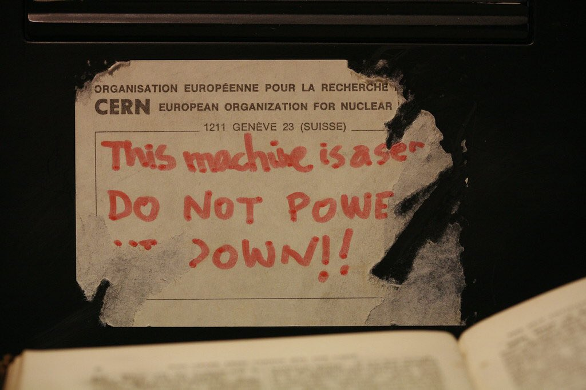
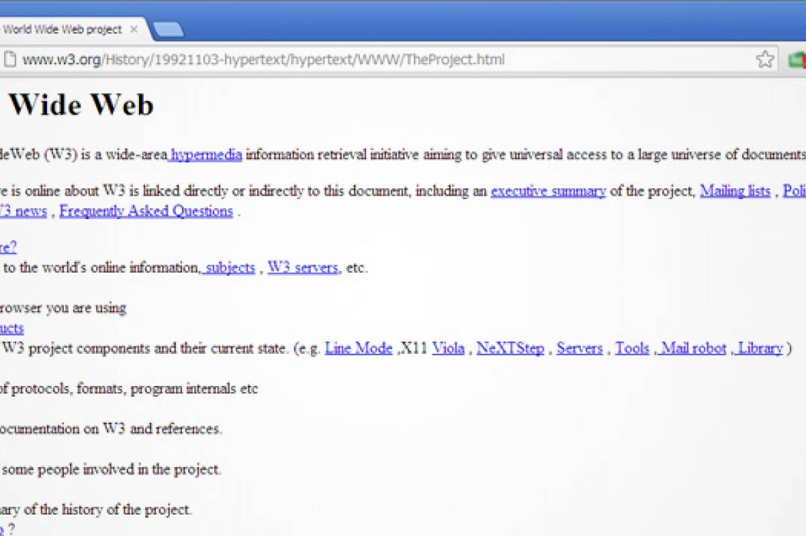
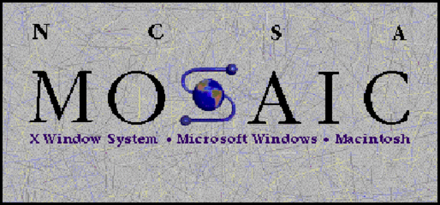

Entonces, ¿qué es el internet?
1960:los orígenes del internet datan del 1957 cuando irrumpió en EE.UU la información sobre el satélite denominado Sputnick, la unión soviética fue la primera en lanzar un satélite al espacio y EE.UU quedo sorprendido de este logro. El Gobierno de EE.UU movilizó a sus científicos y militares para evitar estas situaciones comprometedoras, en 1958 el ministro de defensa Foster Dulles creó la ARPA, la agencia de proyectos de investigación avanzada para el desarrollo de nuevas tecnologías de comunicación, Paul Baran (ingeniero informático) ordenó la creación de una red informática que funcionara aun cuando partes de sistema estuvieran inactivas, es decir un sistema conformado por un 1 solo nodo, donde solo existía un camino que va del punto A al punto B y si falla el nodo central, como resultado la información no llegará a su destino, a este se le llama red centralizada, en cambio una red descentralizada permite desviar el envio de la información en caso de fallar el nodo central, donde las computadoras funcionaban como nodos por igual, así nació la idea de internet
En 1969 mediante líneas de teléfonos especiales se cerró por primera vez una red informática, situada entre las universidades de Stanford, Utah, Santa Barbara y los ángeles( donde se instaló el primer nodo), así empezó el ARPANET haciendo referencia a que estaban conectados desde miles de kilómetros con el sufijo "NET", una red utilizada únicamente por científicos especializados y conocedores de los comandos que se utilizaban para recibir y enviar información, hasta 1974 ARPANET creció hasta incorporar más de 100 ordenadores a la red, hasta que se empezó a denominar "internet", pero había un problema, los ordenadores tenían diferentes sistemas operativos y estas no se entendían entre sí, para poder intercambiar información tenían que tener muchos conocimientos informáticos, donde Tim Berners-Lee hace su debut, este entra a trabajar una vez más en el CERN y le fu encomendada solucionar este último problema, donde todos los trabajadores del CERN intercambiaran fácilmente información de sus investigaciones para conseguirlo, el creo los 2 elementos que marcaron el principio de la WWW y los denomino HTML (Hypertext markup language) y URL (Universal resource locator), donde HTML es un lenguaje que entienden todos los ordenadores y permite crear documentos de texto y links, para visualizar los documentos en el ordenador usaban un browser, un navegador sencillo que permitía buscar información en el internet a través de una dirección única, esa es la URL donde empiezan por las letras www. Después va el nombre del ordenador donde están guardados los datos que buscas, lo que hoy denominamos servidor como por ejemplo www.m7 y por ultimo separado por un / se coloca el tema y subtemas que buscas como por ejemplo www.m7/courses de esta manera todos los ordenadores podrían buscar la información que necesitaban sin saber mucho de informática, donde ahora es donde entra la web como protagonista, aunque todavía el internet era algo para gente conocedora de informática, después entra el navegador MOSAIC a facilitar su uso. A finales de 1994 el CERN se despide del invento de la WWW sin solicitar derechos por parentación, la idea de una red pública no comercializada era más grande
1989:Internet se crea en los años 60 para intercambiar datos entre computadoras y trabajar en conjunto hasta 1989. La internet era un ámbito que solo usaban personas con conocimientos técnicos, tales como científicos, algo que al científico Tim bernes-Lee no le parecía, él quería hacer del internet algo que todos pudieran usar

1990:El siguiente año Tim berners-Lee lleva a cabo el primer intento de la web, la cual funciona con una arquitectura cliente/servidor donde el cliente (navegador) hace una petición y el servidor le devuelve una respuesta Por ejemplo:
Cuando entras a la página de módulo 7 y este de vuelve una respuesta la cual es la página web
En este mismo año a Tim berners-Lee le habían encargado hacer un software el cual pudiera conectar a los usuarios del ARPANET (por esta razón también nace la WWW), porque las computadoras conectadas a esta red eran de distintos software y quienes tenían que recibir la información tenían que saber muchos comandos técnicos de la línea de comandos para poder recibir la información (es decir no eran como los navegadores modernos donde haces click a las cosas, para acceder a algo tenías que usar comandos
Tim bernerns-Lee crea el primer servidor en una computadora next, la cual fue la primera computadora en convertirse en un servidor de la web en el mundo
En esta imagen esta una nota pegada a la computadora que se convirtió en el primer servidor, la cual dice traducido "esta máquina es un servidor, ¡no apagarla!" para prevenir que uno de los colegas donde trabajaba Tim berners-Lee no la apagara por error en el CERN
1991:En este año sale a luz la primera página web conformada solo por texto y aparece la primera versión del protocolo HTTP, el cual es el protocolo (de los muchos protocolos que existen) usado para enviarse documentos/información a través web Esta imagen de aquí abajo muestra la primera página web del mundo, que es más bien una réplica de cómo se veía, pero con HTML porque para este tiempo no existía HTML y este modelo es uno de HTML . Pueden visitarlo con este enlace http://info.cern.ch/hypertext/WWW/TheProject.html y si presionan ctrl+u en el navegador pueden ver el código HTML con el que está estructurado 
1992:El siguiente año aparece la primera versión formalizada de HTML que es el lenguaje para escribir texto en una página web, lo que trae HTML es la capacidad de poder crear hipertextos, los hipertextos son textos que tienen vínculos o enlaces como bien sabrás los usas a diario y en este tiempo los hipertextos eran como algo mágico. Un texto que te llevara a otro texto y ese texto te llevara a otro texto, formando la web como la conocemos, un mundo enorme y sin fin, pero como no sabían cómo esto iba a ser posible sin que el hipertexto te llevara a una ubicación errónea, en ese entonces, Tim berners-Lee habia creado también la URL (universal resource locator) un identificador único para cada enlace

1993:El primer programa de navegación grafico para interpretar el código HTML en lugar navegar con comandos (era lo más parecido a los navegadores modernos de la actualidad), que hasta entonces los usuarios se limitaban a intercambiar datos a través de un protocolo llamado FTP, este navegador era compatible con Unix, Macintosh y Windows lo que facilitó la propagación de la WWW (world wide web) permitiendo a usuarios sin mucha experiencia en código para navegar en internet, aunque todavía había que usar la línea de comandos para ciertas cosas, aunque su proyecto fue abandonado más tarde en 1997
Guerra de los navegadores
1994:aEn este año comienza la razón por la que MOSAIC sale del mercado, aparecen navegadores más modernos como Netscape el cual popularizo la web haciendo que personas con 0 conocimiento tecnológico navegaran en la web sin conocer conceptos técnicos, de este modo la web había empezado a crecer cuesta arriba; Yahoo! como buscado se incorpora a la web, aunque Yahoo! no era un buscador exactamente porque sus creadores hicieron un directorio de muchas páginas web de manera manual; PHP aparece con la intención de hacer dinámicas las anteriores páginas estáticas de la web porque HTML no era programación sino más bien marcar información y ya; por último aparece la W3C que es la organización encargada de fijar estándares para web, porque como se mencionó, la web era un sitio sin reglas y muy libre, esta organización establecía los estándares para mantener un poco el control y no hicieran todo lo que quisieran.
1995:aInternet Explorer entra en el mercado para competir contra Netscape, el cual estaba teniendo un éxito increíble, este mismo año aparece Javascript como lenguaje de programación para las páginas web, aunque había salido con muchos problemas por haber sido creado en 10 días, aparece la base de datos MySQL la cual revolucionaria la manera en que se maneja la información dinámicamente y por último aparece Java que no es lo mismo que Javascript, es un lenguaje de programación el cual no era técnicamente para web, pero se podía utilizar del lado del Backend o servidor de la página
1996:En este año aparece la herramienta Macro Media Flash una aplicación permitía incorporar videos y animaciones a la básica web genérica haciendo más interactiva la página, ASP Microsoft, CSS hace su aparición para solucionar el mal aspecto de las página, formando finalmente a las 3 tecnologías que fundamentarían la web como la conocemos hoy en día